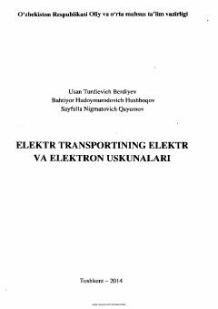

ETElektr transporti va temir yo'l jihozlarining tuzilishi hamda ishlash prinsiplari haqida darslik.
Ushbu darslik oliy o'quv yurtlari talabalari uchun mo'ljallangan bo'lib, elektr transportining elektr va elektron jihozlari, yarimo'tkazuvchi asboblar, to'g'rilagich sxemalari hamda raqamli sxemotexnika asoslarini yoritadi. Kitobda zamonaviy elektrovozlar, elektr poezdlari va ularning elektr tarmoq qurilmalarining tuzilishi hamda ishlash prinsiplari batafsil bayon etilgan. Shuningdek, talabalarga elektr transportini boshqarish, sozlash va nosozliklarni bartaraf etish ko'nikmalarini egallashda yordam beradi.